Menu
|
La Paz
La ciudad de La Paz, oficialmente Nuestra Señora de La Paz (en aimara y quechua: Chuqiyapu, ‘labrantío de oro’; españolizado como Chuquiago, Chuquiabo o Choqueyapu) es la capital administrativa y sede de gobierno de Bolivia (su capital de facto). Es el centro político, financiero, social, académico y cultural más importante del país, además de ser la ciudad con mayor nivel de desarrollo sostenible en Bolivia. Con una población estimada de 940 000 habitantes (en 2020), La Paz es la tercera ciudad más poblada del país, detrás de Santa Cruz de la Sierra y la vecina El Alto.El área metropolitana de La Paz, que incluye a los municipios vecinos de El Alto, Viacha, Achocalla, Mecapaca, Palca, Laja y Pucarani,es la segunda más poblada del país, llegando a tener una población estimada de 2,1 millones de habitantes en 2020.
Ubicada en el oeste de Bolivia, a 68 km al sureste del lago Titicaca, La Paz está situada en un cañón creado por el río Choqueyapu y está rodeada por las altas montañas del altiplano, entre ellas el nevado Illimani, cuya silueta ha sido un emblema importante de la ciudad desde su fundación.A una altura promedio de 3650 m s. n. m., La Paz es la metrópoli más alta del mundo. Esta característica junto a la topografía accidentada de la urbe ofrecen vistas únicas de la cordillera Real. Debido a esta elevación, La Paz tiene un clima subtropical de altura, con veranos lluviosos e inviernos secos.
La Paz fue fundada el 20 de octubre de 1548 por el conquistador español Alonso de Mendoza en el valle conocido por el pueblo indígena como Chuquiago Marka. Fue capital de la Intendencia de La Paz, región administrativa del Virreinato del Río de la Plata. La ciudad experimentó numerosas revueltas a favor de su independencia; en 1781, el líder indígena Túpac Katari sitió La Paz por seis meses y el 16 de julio de 1809, el patriota Pedro Domingo Murillo inició una revolución en la ciudad, dando inicio a las guerras de independencia hispanoamericanas.
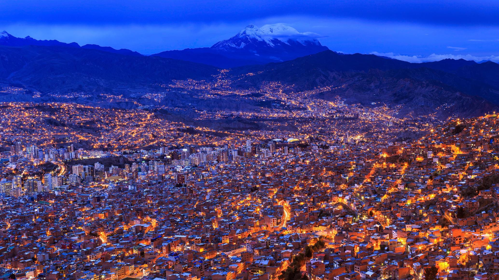
Tiwanaku
Tiahuanaco o Tiwanaku es una antigua ciudad arqueológica, capital del Estado tiahuanacota, ubicada 21 kilómetros al sureste del lago Titicaca en el departamento de La Paz al oeste de Bolivia.
Tiahuanaco fue el centro de la civilización tiahuanacota, una cultura preincaica que basaba su economía en la agricultura, la ganadería y la arquitectura, y que abarcó los territorios de la meseta del Collao, entre el oeste de Bolivia, suroeste de Perú, el norte de Argentina y el norte de Chile, regiones desde las cuales irradió su influencia tecnológica y religiosa hacia otras civilizaciones contemporáneas a ella.
La ciudad de Tiahuanaco se caracteriza por su arquitectura decorada con relieves y planos incisos colocados sobre estelas; está compuesta por siete construcciones arquitectónicas importantes: Kalasasaya, templete semisubterráneo, pirámide de Akapana, Puerta del Sol , Puma Punku y templete , también grandes pirámides y esculturas.
 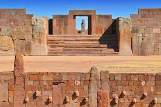
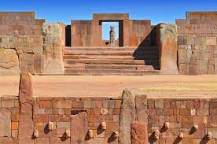
Lago Titicaca
El Titicaca (en aimara: Titiqaqa, de titi, 'gato salvaje' y qaqa, 'cabello cano'; en referencia al gato andino gris) es el lago navegable más alto del mundo, ubicado en los Andes centrales, dentro de la meseta del Collao, a una altitud media de 3812 m s. n. m. entre los territorios de Bolivia y Perú. Posee un área de 8300 km² de los cuales el 56 % (4996 km²) corresponden a Perú y el 44 % (3304 km²) a Bolivia y 1125 km de costa; su profundidad máxima se estima en 281 m y se calcula su profundidad media en 107 m. Su nivel es irregular y aumenta durante el verano austral.
Está formado por dos cuerpos de agua separados por el estrecho de Tiquina; el más grande situado al norte es denominado lago Mayor o Chucuito y tiene una superficie de 6450 km², estando en esta parte su mayor profundidad (283 m), cerca de la isla Soto. El otro cuerpo más pequeño llamado Menor o lago Huiñaymarca situado al sur tiene una superficie de 2112 km², con una profundidad máxima de 45 metros.
El lago Titicaca se encuentra entre las cordilleras andinas en una cuenca de alrededor de 58 000 km².
Es el lago navegable más alto del mundo y ocupa el lugar 19º del mundo por superficie.
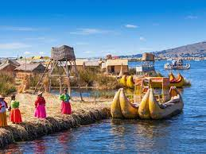
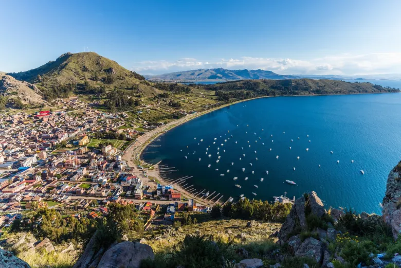
Valle de la Luna
El valle de la Luna es un área protegida municipal y formación geológica de la ciudad de La Paz, sede de gobierno de Bolivia. Se encuentra a unos 10 kilómetros del centro urbano de la ciudad y administrativamente pertenece al Macro distrito de Mallasa.
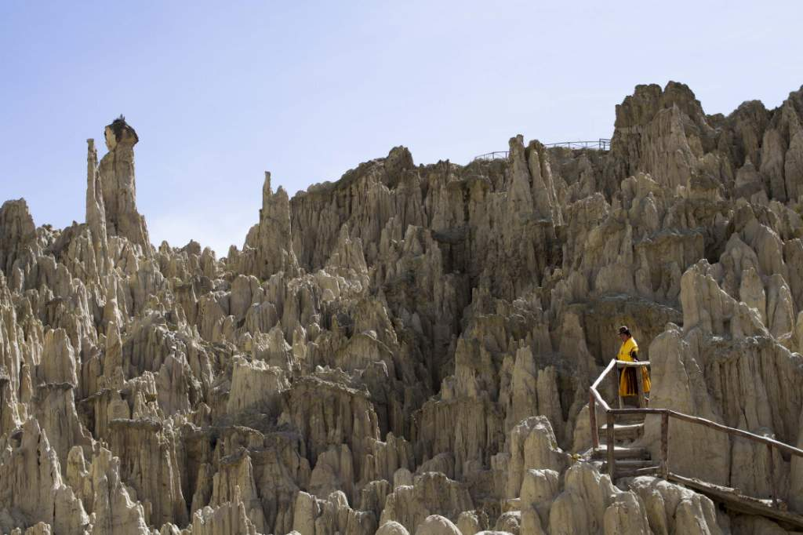
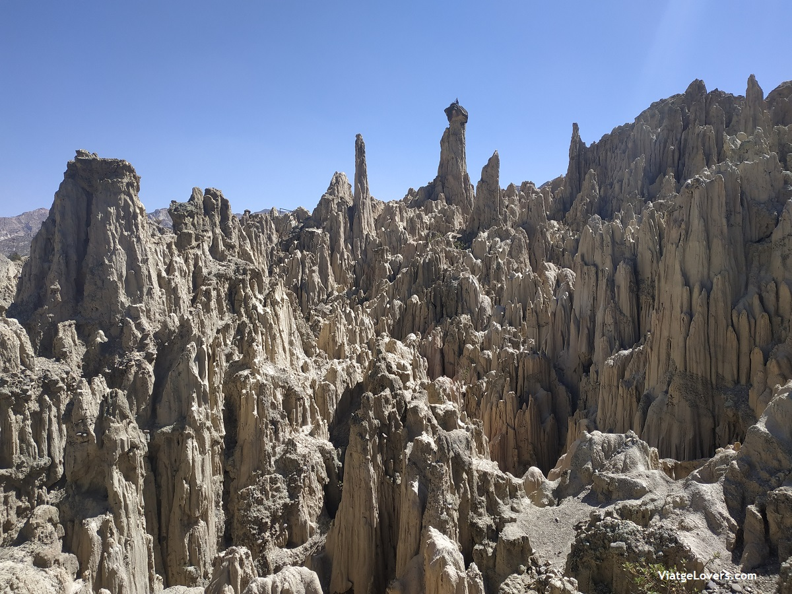
Isla del Sol
La isla del Sol o isla Titicaca es una isla boliviana situada en el lago Titicaca, dentro del municipio de Copacabana en la provincia de Manco Kapac del departamento de La Paz. Tiene una longitud de 9,6 km por 4,6 km de ancho y una superficie de 14,3 km², lo que la convierte en la isla más grande del lago. Su nombre original es isla Titikaka y por ello el lago donde se encuentra lleva su nombre, que significa "puma de piedra".
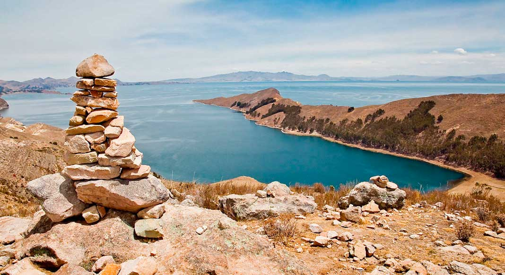
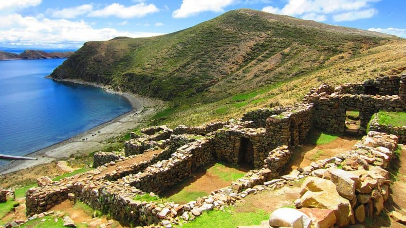
Valle de Animas
El Valle de las Ánimas es un área protegida municipal, monumento natural departamental y formación geológica de la ciudad de La Paz, se encuentra a pocos kilómetros del área urbana a una altura de 3965 msnm.
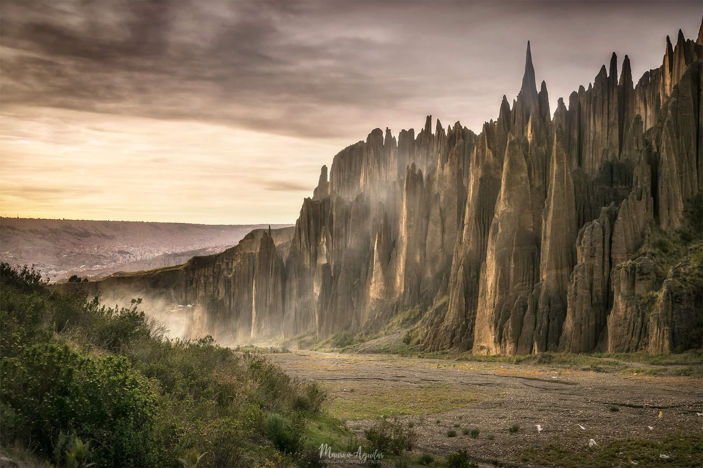
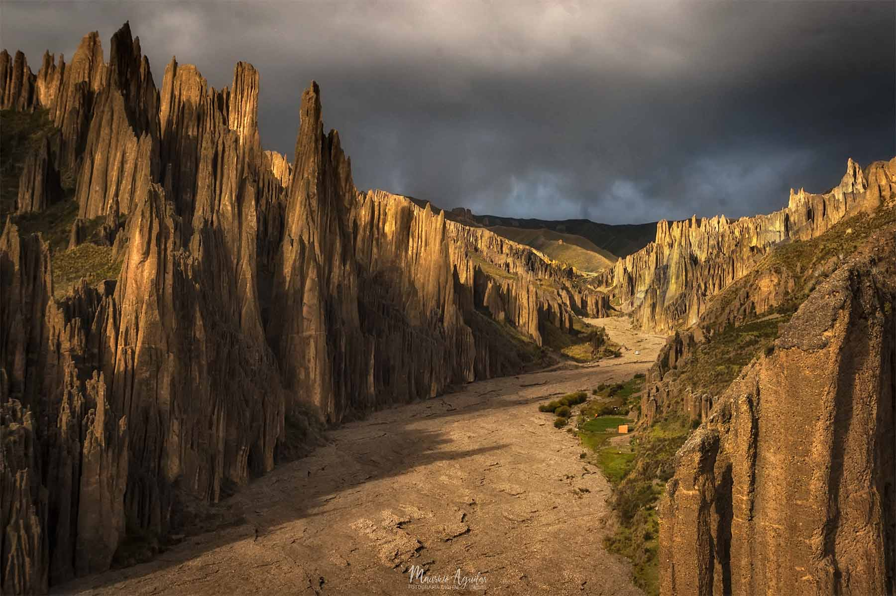
|


|